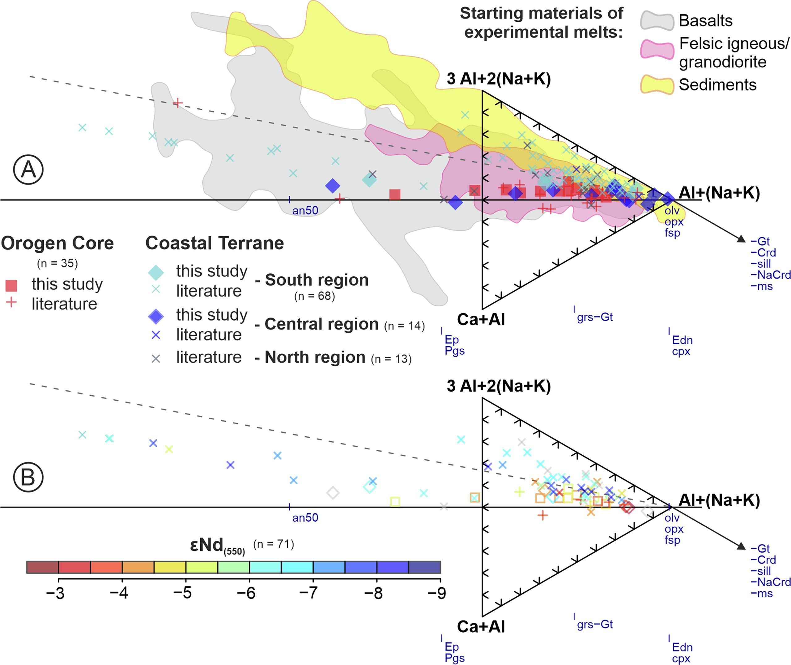

Pan-African granitic magmatism of the Kaoko Belt: Tectonic perspective from its South American connection and insights into the crustal architecture of SW Gondwana

Resumo em Português
O Cinturão Kaoko, no noroeste da Namíbia, formou-se durante a amalgamação do Gondwana no ciclo orogênico Pan-Africano do Neoproterozoico ao Cambriano. O cinturão possui uma arquitetura tectônica complexa, na qual diversas unidades de embasamento e associações metassedimentares foram justapostas ao longo de zonas de cisalhamento e experimentaram amplo magmatismo intrusivo, geralmente confinado ao seu domínio ocidental. Apresentamos um extenso novo conjunto de dados geoquímicos e isotópicos de rocha total, bem como idades U-Pb em zircão, abrangendo uma ampla variedade de granitoides e rochas básicas subordinadas em todo o Cinturão Kaoko, complementado por análises isotópicas de rocha total de diversas unidades de embasamento e metassedimentares e por uma compilação de dados da literatura. O novo conjunto de dados fortalece modelos anteriores que correlacionam os granitoides do Cinturão Kaoko ao coevo Batólito Florianópolis no Cinturão Dom Feliciano sul-americano, utilizado aqui para lançar nova luz sobre a organização tectônica e a evolução do ciclo orogênico Pan-Africano no Neoproterozoico. As semelhanças na variação composicional dos granitoides de ambos os subdomínios do Cinturão Kaoko Ocidental — o Núcleo do Orógeno e o Terreno Costeiro — sugerem que toda a zona compreende uma associação heterogênea, porém comparável e consistentemente diversa de rochas. A comparação com a América do Sul reforça que, embora os granitoides apresentem assinaturas isotópicas similares às da crosta, estas contrastam marcadamente com as das rochas de embasamento predominantemente Arqueanas a Paleoproterozoicas de ambos os cinturões. Isso sugere que as fontes magmáticas do magmatismo intrusivo do Cinturão Kaoko são provavelmente uma mistura de fusão crustal autóctone com importante aporte derivado do manto em algum momento após o Paleoproterozoico, provavelmente impulsionado por orogenia acrecionária e/ou rifteamento no Toniano, Ediacarano, ou em ambos. A presença de associações mais juvenis no domínio ocidental do Cinturão Kaoko pode indicar um limite isotópico dentro do cinturão que espelha a configuração tectônica do Cinturão Dom Feliciano na América do Sul, correspondente à Zona de Cisalhamento Puros, que pode ter atuado como limite de terreno desde os estágios mais precoces da evolução tectônica do Cinturão Kaoko.